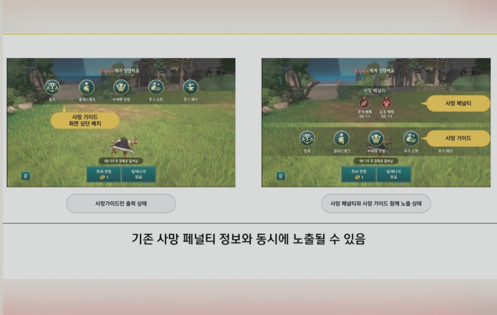
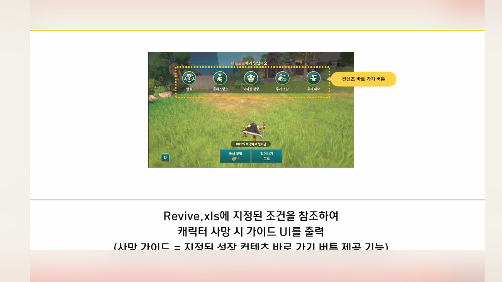
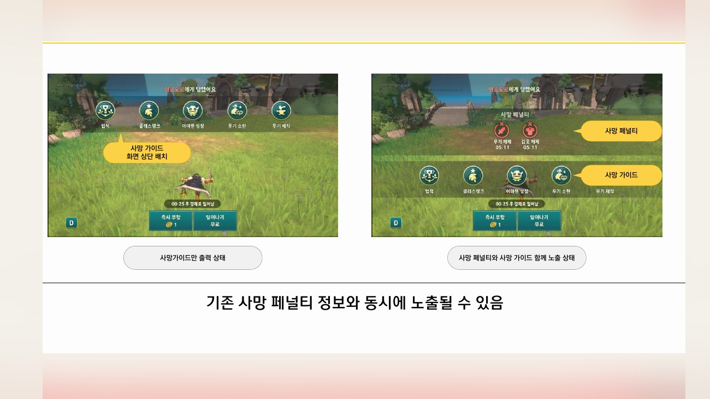
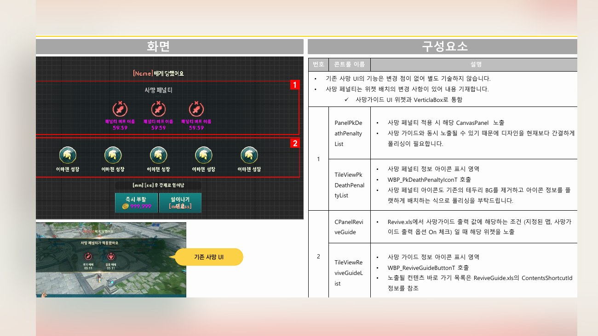
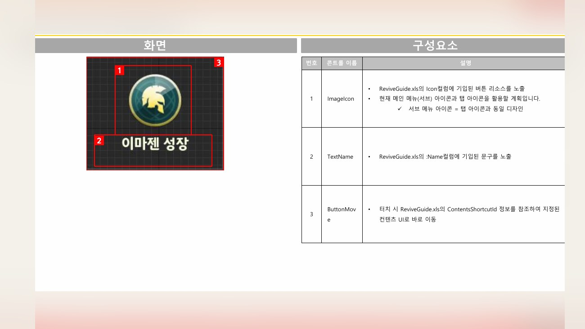

Planning Context
어떤 기획이었나
- 사망은 플레이가 끊기는 순간이기 때문에 부활, 이동, 재도전 안내가 명확해야 합니다.
- 실패 이후 복귀 선택지가 흐리면 유저가 다음 행동을 정하지 못하고 이탈할 수 있습니다.
ProjectN · Failure Recovery
캐릭터 사망 이후 유저가 다음 행동을 선택할 수 있도록 부활, 이동, 안내 흐름을 정리한 UX 사례입니다.

Planning Context
Process
Deliverables
Result
플레이 실패 후 유저가 부활과 복귀 선택지를 명확히 이해하도록 사망 가이드 UX를 정리했습니다.
Deliverable Captures
원본 문서는 포함하지 않고, 포트폴리오 확인용으로 일부 페이지만 이미지화했습니다. 슬라이드 마스터/상하단 영역은 흐림 처리했습니다.



